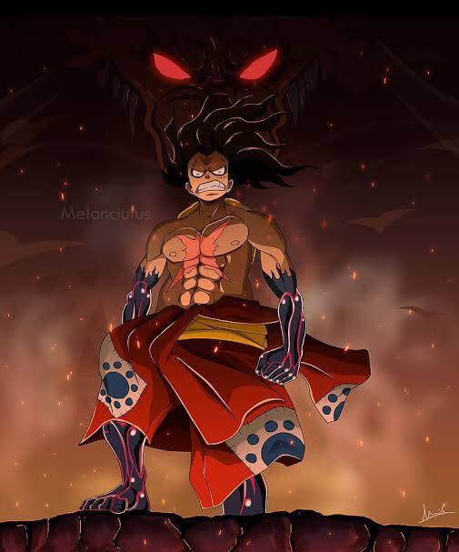

Monkey D. Luffy
Alcunha: Chapeu De Palha
Recompensa de 3.000.000.000 berries
Dados Pessoais
Idade 19 anos
Nascido em Vila Foosha, Reino De Goa (East Blue)
Nacionalidade: (Segundo Eiichiro Oda) Brasileiro
Objetivos
- Se Tornar o Rei dos Piratas
- Encontrar o One Piece
- Ser o Pirata Mais Livre
Experiências
- Fundador e Capitão dos Piratas do Chapéu De Palha
- Lider De uma Tripulação com membros leais e experientes em areas diversas ( Navegação, Combate, Medicina, Engenharia, Arqueologia e Musica)
Habilidades
- Akuma no Mi: Gomu Gomu no mi Revelado atualmente como Hito Hito no mi, Modelo Nika
- Possui um Corpo com propriedades elásticas de Borracha e a capacidade de despertar o "Deus sol"
- Domino de Haki: Podendo usar o Haki do Rei/ Haki do Rei Avançado , Haki da Observação, Haki do Armamento,
- Resistência e Determinação: Forte Tolerância a venenos, Dor extrema e capacidade de inpirar lealdade inabalável em aliados
Formação Acadêmica
- Educação Formal: Nenhuma (aprendizado prático na selva com Ace e Sabo em combates reais).